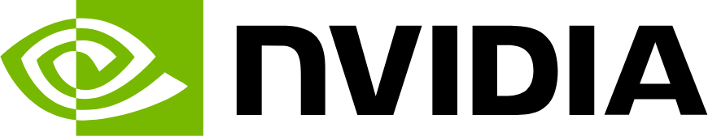
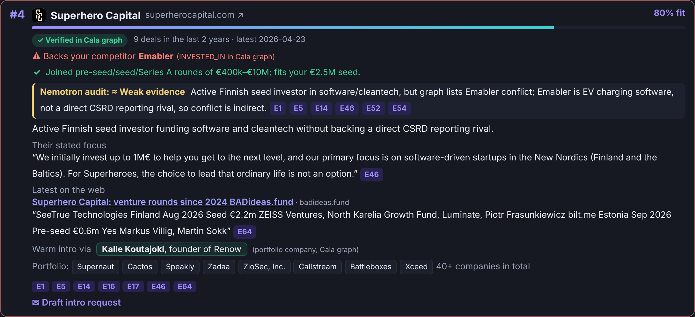

JUNCTION 2026 · BEST USE OF NEMOTRON
Unicorn Oracle tells first-time founders who to pitch. Gemini proposes the investors; NVIDIA Nemotron audits every lead against the evidence before the founder sees it.

WHY THIS USE CASE
HIGH STAKES
Pitching a rival’s investor wastes the meeting and can put your plan in a competitor’s board pack.
CHECKABLE
Every claim maps to sourced facts and Cala knowledge-graph edges, so an auditor can prove a lead right or wrong.
LLMS SOUND SURE
The first model writes confident rationales, even when the graph says otherwise. Self-review shares its blind spots.
WHAT WE BUILT
Three AI partners debate a shortlist and cite evidence ids
Which cited facts actually name each investor? Graph: deals, round sizes, competitor stakes
Reads all evidence (Cala graph + live web) and rates each lead supported, weak or contradicted, with a reason and the facts it used
Weak leads move down, contradicted ones go last; the verdict shows on every card
nvidia/nemotron-3.5-super-vl-120b-a12b on build.nvidia.com · strict JSON schema · one call per report, about 3 s
CAUGHT IN REAL RUNS
Contradicted
Gemini said Lifeline Ventures does not back drone rival Kelluu. Nemotron: the Cala graph shows that investment.
Weak, non-dilutive
Gemini ranked grant agency Business Finland first for an equity round. Nemotron: a grant body cannot lead it. Rated weak in 3 of 3 runs.

WHY IT IS KEY TO OUR EVALUATION
Final
its verdict sets the final order: weak down, contradicted last
Cited
every verdict names its evidence; unknown ids are dropped
≠
a different model family from the one that proposed
~3 s
per report, reasoning off (on: ~55 s, similar audits)
6/6
valid audits with a strict JSON schema (free JSON broke ~1 in 3)
Safe
if the audit fails, the report still ships, shortlist unchanged
WHAT WE LEARNED · TRY IT
93-127-213-190.sslip.io
Click “Defence drones” for a 9-second replay of a real run, then open Investors.